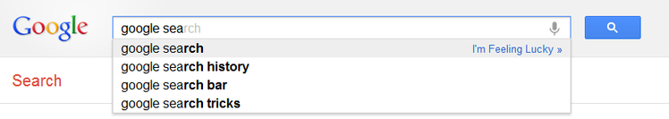
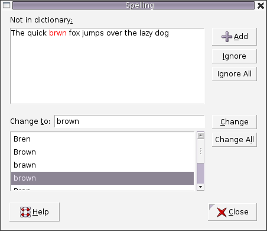
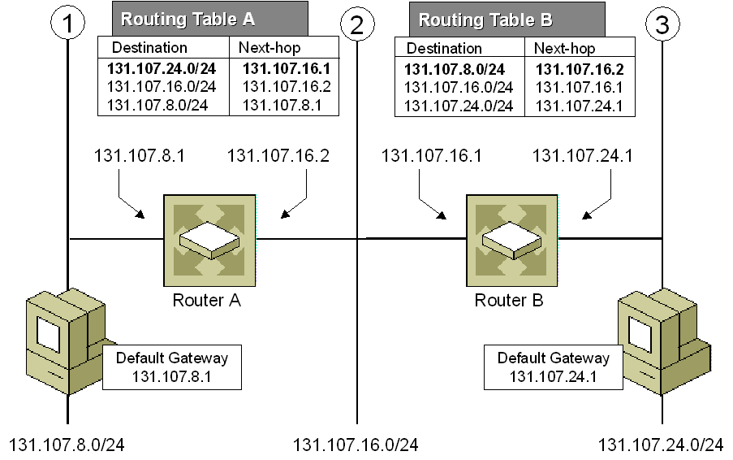
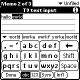
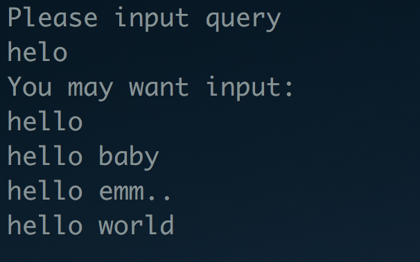
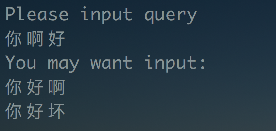

Trie 与补全、纠错
Table of Contents
介绍
Trie 树也就是所谓的字典树，一般用来做字符串前缀匹配，词频统计。如果数据量比较大，而且数据重复率比较高（或者说前缀重复率比较高），用 trie 做词频统计可以节省很多空间。如果对空间没要求，hash 算法还是要好于用 trie。另一个用处是可以对字符串进行字典序排序（深度优先搜索）。 这个用 hash 也是不能做的。Trie 的插入和查询时间复杂度都为 O(k) ， 其中 k 为 key 的长度，与 Trie 中保存了多少个元素无关。
应用
浏览器自动补全
这个是 google 的自动补全功能，当然 baidu 的也有。

Figure 1: Google AutoComplete
拼写检查
例如 word 里面的

Figure 2: Word
IP routing (Longest prefix matching)

Figure 3: Ip Routing
T9 predictive text

Figure 4: T9 which stands for Text on 9 keys, was used on phones to input texts during the late 1990s.
Prefix Trie
先看实现代码
定义 Trie 结构：
#include <iostream>
#define MAX 26
using namespace std;
typedef struct TrieNode {
bool isStr; // 字符串是否结束
int prefixCount; // 以该字符结束的前缀有多少个
struct TrieNode *next[MAX];
} Trie;
插入我们可以这样来：
void insert(Trie *root, const char *s) {
if (!root || *s == '\0')
return;
int i;
Trie *p = root;
while(*s!='\0') {
if (!p->next[*s-'a']) {
Trie *temp = new Trie();
for (i = 0;i < MAX; i ++){
temp->next[i] = NULL;
}
temp->isStr = false;
temp->prefixCount=1;
p->next[*s-'a'] = temp;
p = p->next[*s-'a'];
} else {
p = p->next[*s - 'a'];
p->prefixCount += 1;
}
s ++;
}
p->isStr = true;
}
查询：
int search(Trie *root, const char *s) {
Trie *p = root;
while(p != NULL && *s != '\0') {
if (p->next[*s-'a']) {
p = p->next[*s - 'a'];
s ++;
}
}
return (p != NULL && p->isStr == true);
}
查找前缀出现次数：
int countPrefix(Trie *root, char *s) {
if (!root || *s == '\0')
return 0;
Trie *p = root;
while(p != NULL && *s != '\0') {
if (p->next[*s - 'a']) {
p = p->next[*s - 'a'];
s ++;
} else {
return 0;
}
}
if(p == NULL)
return 0;
else
return p->prefixCount;
}
自动补全功能和纠错
核心代码如下， 比较简单，不解释了。完整代码(这里)。
void FindFullStr(TreeNode *root, string query, vector<string> &result) {
TreeNode *p = root;
if (root == NULL)
return;
if (root->isEnd)
result.push_back(query);
for (int i = 0;i < N; i ++) {
if (root->next[i] != NULL) {
char c = (char)i;
FindFullStr(root->next[i], query+c, result);
}
}
}
void FindStr(string src, vector<string> &result) {
int cur = 0;
TreeNode *p = this->root;
unsigned char index = (unsigned char) src[cur];
while (cur < src.size() && p->next[index]) {
p = p->next[index];
++cur;
index = (unsigned char) src[cur];
}
if (cur != src.size() || p == NULL) {
return;
}
FindFullStr(p, src, result);
}
int IsError(string query) {
TreeNode *p = this->root;
if (p == NULL)
return 0;
int cur = 0;
unsigned char index = (unsigned char) query[cur];
while(cur < query.size() && p->next[index]) {
p = p->next[index];
++ cur;
index = (unsigned char) query[cur];
}
if (!p->isEnd)
return cur;
return 0;
}
void CorrectSpell(string query, vector<string> &res) {
int index = IsError(query);
if (index) {
string sub = query.substr(0, index);
FindStr(sub, res);
}
}
int main(int argc, char *argv[])
{
Trie *p = new Trie();
p->InsertNode("hello world");
p->InsertNode("hello baby");
p->InsertNode("hello emm..");
p->InsertNode("hello");
p->InsertNode("你好啊");
p->InsertNode("你真好");
p->InsertNode("你好坏");
string query;
cout << "Please input query" << endl;
cin >> query;
vector<string> result;
//p->FindStr(query, result);
p->CorrectSpell(query, result);
vector<string>::iterator it;
if (result.size() > 0)
cout << "You may want input:" << endl;
else
cout << "You input is correct" << endl;
for(it = result.begin(); it != result.end(); ++ it){
cout << *it << endl;
}
return 0;
}
实验效果如下：

